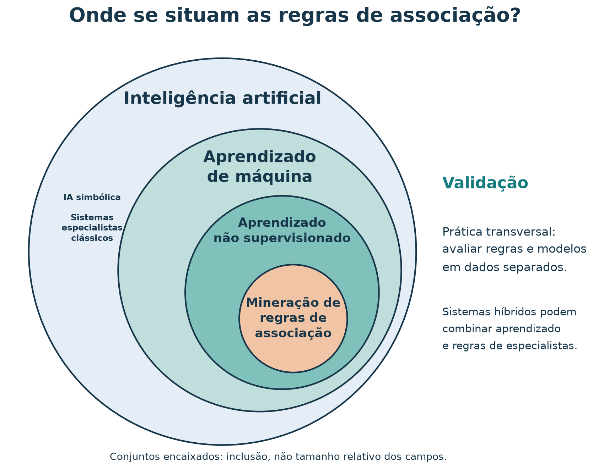
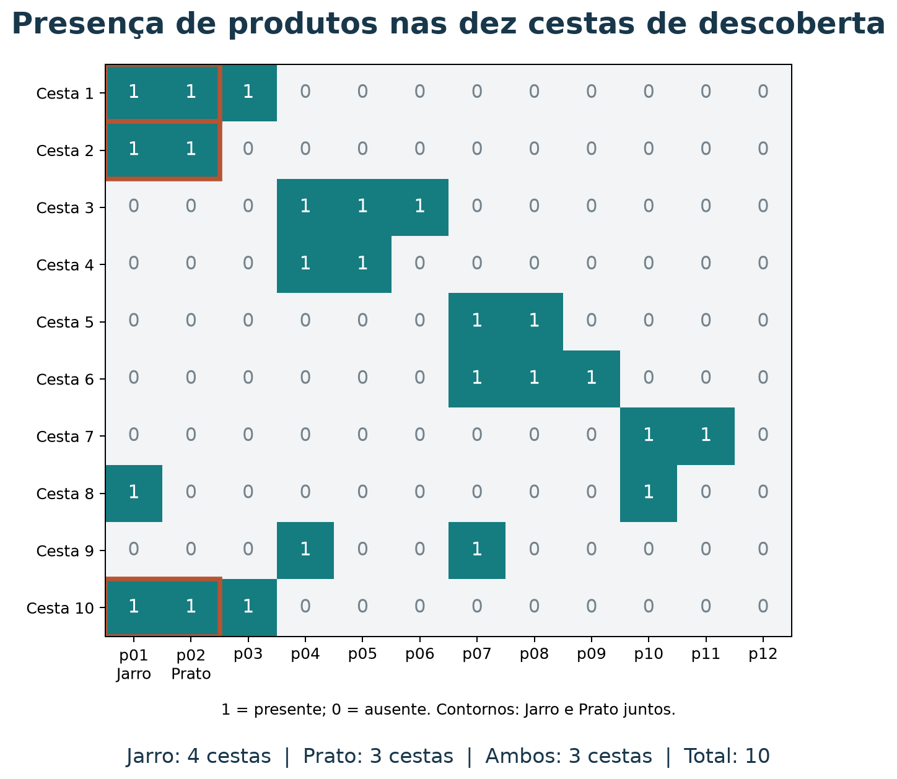
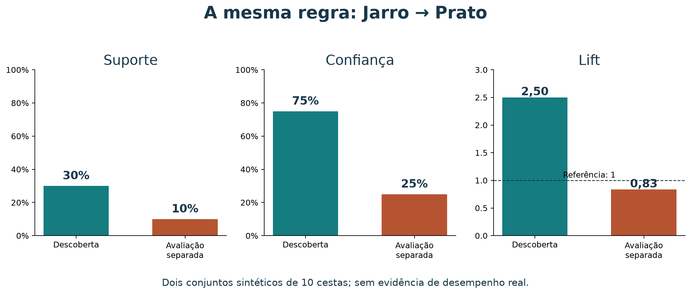
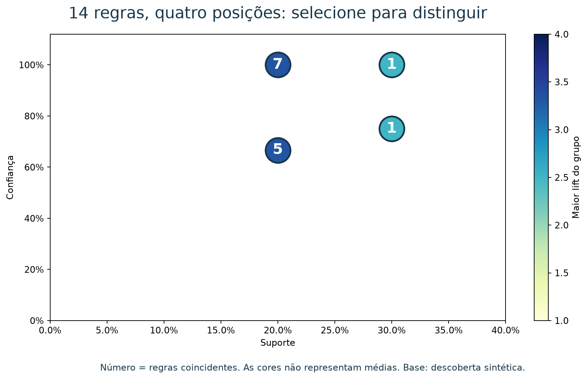
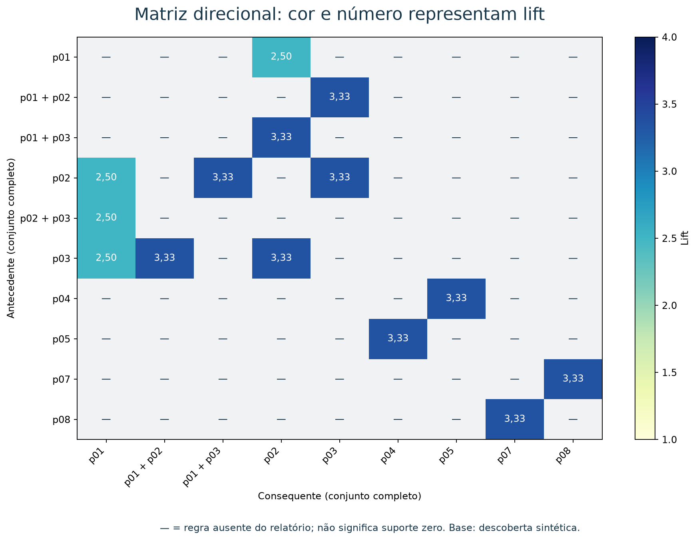
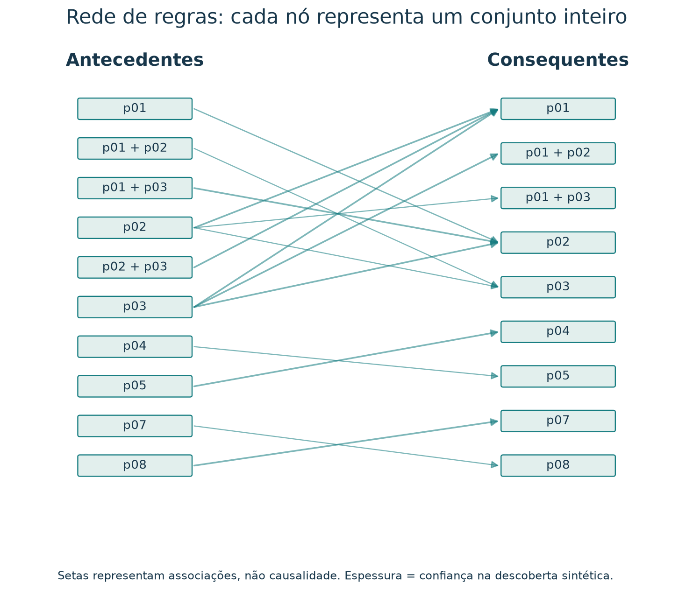

Marketing orientado por dados: como minerar e relatar regras de associação
Leia a versão web com o explorador interativo incorporado.
Ao concluir este tutorial, você deverá conseguir calcular suporte, confiança e lift, ler um relatório de regras, justificar quais padrões merecem investigação e transformar esses padrões em hipóteses de marketing. Você também produzirá um breve relatório com contagens, métricas, interpretação e uma ação a testar. Além disso, você situará a indução de regras dentro da inteligência artificial, explicará sua relação com sistemas especialistas e distinguirá descoberta, validação em novos dados e teste de uma ação de marketing. As bases são sintéticas: a descoberta usa dez cestas e a comparação de validação usa dez cestas adicionais. Os resultados não constituem evidência sobre consumidores reais.
Roteiro de estudo
Você pode seguir o roteiro abaixo em aproximadamente 75 minutos ou consultar cada seção separadamente para revisar os conceitos e reproduzir os resultados.
| Tempo sugerido | Atividade de estudo |
|---|---|
| 10 min | Situar regras, aprendizado de máquina, IA e sistemas especialistas |
| 5 min | Ler as transações e formular a pergunta |
| 8 min | Construir as três métricas a partir de contagens |
| 7 min | Calcular uma regra e sua inversa |
| 7 min | Minerar itemsets e gerar regras |
| 8 min | Comparar resultados e escrever um relato |
| 10 min | Avaliar uma regra em transações separadas |
| 15 min | Explorar regras com BI e exportar uma evidência visual |
| 5 min | Resolver o exercício e discutir a interpretação |
1. Da inteligência artificial à indução de regras
Inteligência artificial (IA) é o campo que estuda e desenvolve sistemas capazes de realizar tarefas como raciocinar, aprender, perceber e tomar decisões. Aprendizado de máquina, ou machine learning (ML), é uma área da IA em que algoritmos extraem padrões dos dados para construir modelos ou regras. Você não precisa usar uma rede neural para trabalhar com aprendizado de máquina. Veja a introdução ao aprendizado de máquina da IBM.

Figura 1 — Diagrama de Venn com conjuntos encaixados, também chamado diagrama de inclusão ou de Euler. As áreas indicam pertencimento, não o tamanho relativo dos campos. O mapa destaca o caminho deste tutorial, sem enumerar toda a IA.
Leia a figura de fora para dentro:
- Inteligência artificial: inclui abordagens que aprendem com dados e abordagens que representam conhecimento por símbolos e regras explícitas.
- Aprendizado de máquina: aprende padrões a partir de exemplos. As pessoas ainda definem objetivos, dados, algoritmos e critérios de avaliação.
- Aprendizado não supervisionado: procura estruturas nos dados sem uma resposta-alvo previamente rotulada para cada exemplo.
- Mineração de regras de associação: encontra
conjuntos frequentes e relações como
{Jarro} → {Prato}nas transações. Você não fornece previamente uma lista de regras corretas para o algoritmo reproduzir.
Essa classificação acompanha a apresentação de aprendizado não supervisionado da IBM, que inclui associação entre suas tarefas. A mineração também é estudada em mineração de dados e descoberta de conhecimento em bases de dados.
Induzir uma regra é partir de exemplos particulares para formular um padrão mais geral. Neste exercício, o algoritmo identifica quais conjuntos e relações aparecem nas cestas; as pessoas escolhem os limites de seleção. A existência da regra não garante que ela se mantenha em outras compras: essa é uma questão de validação.
Indução de regras é mais ampla que associação: métodos supervisionados também podem aprender regras para prever uma classe conhecida, como “comprará” ou “não comprará”. O círculo menor localiza estas regras de associação, não todas as formas de aprendizado de regras. Validação é uma prática transversal do aprendizado de máquina, e não um nível adicional da hierarquia: ela avalia se regras e modelos funcionam além dos exemplos usados para construí-los.
Regras e sistemas especialistas
Um sistema especialista é um sistema de IA que representa conhecimento de um domínio delimitado e usa mecanismos de inferência para apoiar conclusões ou recomendações que exigem conhecimento especializado. Na abordagem clássica baseada em regras, você encontra:
- Base de conhecimento: fatos gerais e regras do domínio, muitas vezes escritas no formato SE condição ENTÃO conclusão ou ação.
- Fatos do caso atual: informações disponíveis sobre a situação analisada.
- Motor de inferência: mecanismo que verifica condições e aplica ou encadeia regras para chegar a conclusões, podendo registrar como elas foram obtidas.
Sistemas especialistas pertencem à IA simbólica e podem funcionar com conhecimento fornecido por pessoas, sem aprender suas regras automaticamente. O artigo de Mendes (1997) apresenta essa tradição na gestão da informação.
Você pode usar regras para definir o comportamento de um sistema especialista. Um exemplo simplificado para apoio à loja seria:
Fatos: o cliente consulta Jarro; Prato está em estoque;
a relação Jarro → Prato foi aprovada para uso.
Regra: SE o cliente consulta Jarro
E Prato está em estoque
E a relação foi aprovada
ENTÃO incluir Prato entre as sugestões e registrar a justificativa.Aqui, a condição sobre estoque e a decisão de sugerir são políticas definidas para a operação; a relação entre produtos pode ter origem em mineração e depois ser validada e revisada. Você combina aprendizado de máquina com conhecimento explícito em um sistema híbrido. Sistemas especialistas baseados em regras e sistemas que aprendem com dados são abordagens da IA que podem cooperar.
Uma regra estatística {Jarro} → {Prato} descreve
frequências; ela não prova a implicação lógica “todo comprador de Jarro
compra Prato”. Antes de transformá-la em regra de ação, você precisa
avaliar evidência, utilidade e condições de uso. Um CSV de associações
ou um único filtro if também não constitui, por si só, um
sistema especialista completo.
2. A pergunta e as transações
Uma loja de artesanato quer investigar: quais produtos tendem
a aparecer juntos nas compras? Uma regra como
{Jarro} → {Prato} resume uma associação entre presenças na
mesma transação. A seta indica qual conjunto condiciona a análise; não
indica ordem de compra nem causa.
Como os dados orientam uma decisão de marketing
A loja precisa decidir o que expor junto, que oferta combinada experimentar e qual sugestão apresentar no carrinho. Aqui, marketing centrado em dados significa tornar explícita a ligação entre pergunta comercial, registros de compra, critérios de análise, ação proposta e avaliação de resultado. As regras de associação ajudam a construir essa ligação: tornam um padrão de consumo mensurável, comunicável e verificável.
Três perspectivas da literatura de marketing ajudam a compreender essa ligação: a pesquisa começa com um problema de decisão e organiza a coleta e a análise (Malhotra, 2019); as métricas relacionam decisões a desempenho (Farris et al., 2012); a tecnologia deve contribuir para o valor entregue na jornada do cliente (Kotler, Kartajaya e Setiawan, 2021). As referências bibliográficas e os links de consulta estão ao final.
Figura 2 — Dos registros de compra a uma hipótese de exposição de produtos. Ilustração gerada por IA; as barras são ilustrativas e não representam resultados medidos. Uma sugestão precisa ser avaliada antes de você atribuir a ela ganhos comerciais.
| Passo | Pergunta da equipe de marketing | Entrega da análise |
|---|---|---|
| Decisão | Que combinação de produtos vale testar na vitrine? | Objetivo comercial explícito |
| Evidência | Quais itens aparecem juntos nas compras registradas? | Transações e contagens auditáveis |
| Comparação | O padrão é frequente? Supera a frequência habitual do item? | Suporte, confiança e lift |
| Ação | Como transformar esse padrão em uma oferta relevante? | Hipótese de exposição conjunta ou venda complementar |
| Aprendizado | A mudança melhorou o resultado para a loja e o cliente? | Teste da ação com métricas definidas previamente |
O cadastro e o histórico de compras também aparecem no material brasileiro do Sebrae sobre cadastro de clientes como insumos para identificar oportunidades de vendas. Para calcular as regras deste tutorial basta o conjunto de itens por transação; identificar pessoas é desnecessário.
Usaremos somente cestas de dados/catalogo.json. Cada
linha é uma transação. A ordem dos produtos dentro dela não importa;
repetir um produto na mesma cesta não aumenta sua contagem. Duas linhas
com os mesmos itens contam como duas transações, pois representam
compras distintas.
| Cesta | Itens |
|---|---|
| 1 | p01, p02, p03 |
| 2 | p01, p02 |
| 3 | p04, p05, p06 |
| 4 | p04, p05 |
| 5 | p07, p08 |
| 6 | p07, p08, p09 |
| 7 | p10, p11 |
| 8 | p01, p10 |
| 9 | p04, p07 |
| 10 | p02, p03, p01 |
| ID | Produto | Número de cestas |
|---|---|---|
| p01 | Jarro barro Tracunhaém | 4 |
| p02 | Prato esmaltado Tracunhaém | 3 |
| p03 | Boneca de barro | 2 |
| p04 | Rendeira Alto do Moura | 3 |
| p05 | Toalha de renda | 2 |
| p06 | Caminho de mesa renda | 1 |
| p07 | Xilogravura Pilar | 3 |
| p08 | Cordel ilustrado | 2 |
| p09 | Quadro xilo colorido | 1 |
| p10 | Cesto de palha | 2 |
| p11 | Bolsa de palha | 1 |
| p12 | Sousplat de palha | 0 |
Há 12 produtos cadastrados, mas apenas 11 observados nas cestas.
p12 tem suporte zero nesta amostra. Os campos
pedidos e a série de vendas semanais não participam das
contas: todas as frequências abaixo vêm destas dez transações.

Figura 3 — Cada linha representa uma transação; cada coluna, um produto. Conte as presenças nas colunas de Jarro e Prato para reproduzir os denominadores das métricas. O contorno marca as três ocorrências conjuntas.
3. Três perguntas, três denominadores
Sejam A e B conjuntos de itens não vazios e sem itens em comum.
n(A) é o número de cestas contendo todos
os itens de A; N é o total de cestas. A ∪ B
reúne os itens dos dois lados.
Suporte: com que frequência os dois lados aparecem juntos?
O suporte da regra é o suporte do conjunto completo. Não confundir
com suporte do antecedente n(A)/N ou do consequente
n(B)/N.
Confiança: entre as cestas com A, quantas também contêm B?
É a frequência condicional observada de B dado A. O denominador muda
ao inverter a regra, portanto a confiança pode mudar. Só calculamos
quando n(A)>0.
Lift: quanto a confiança supera a frequência habitual de B?
| Valor | Leitura na amostra |
|---|---|
| Lift > 1 | Os conjuntos ocorrem juntos mais que o esperado sob independência |
| Lift = 1 | A co-presença coincide com a frequência esperada sob independência |
| Lift < 1 | Os conjuntos ocorrem juntos menos que o esperado sob independência |
Na discussão de marketing, suporte informa o alcance observado do padrão; confiança informa a frequência de B entre as compras com A; lift compara essa frequência com uma referência. Nenhuma das três mede, por si, lucro ou retorno de campanha. Em especial, o lift da regra não é o aumento de vendas causado por uma campanha: ele descreve uma associação nas transações analisadas.
Lift 2,5 significa 2,5 vezes a frequência de referência, não 2,5% nem aumento de 250%. Suporte e confiança ficam entre 0 e 1; lift pode ultrapassar 1. Essas interpretações seguem as definições da documentação de regras de associação do mlxtend.
4. Conta completa: Jarro → Prato
Jarro (p01) aparece nas cestas 1, 2, 8 e 10:
n(A)=4. Prato (p02) aparece nas cestas 1, 2 e
10: n(B)=3. Ambos aparecem nas cestas 1, 2 e 10:
n(A ∪ B)=3. Temos N=10.
Aqui, n(A) e n(B) são contagens; os
suportes são essas contagens divididas pelo total de transações
N.
| Métrica | Fórmula | Cálculo | Resultado |
|---|---|---|---|
| Suporte do antecedente | n(A) / N |
4/10 | 40% |
| Suporte do consequente | n(B) / N |
3/10 | 30% |
| Suporte da regra | n(A ∪ B) / N |
3/10 | 30% |
| Confiança | n(A ∪ B) / n(A) |
3/4 | 75% |
| Lift | confiança(A → B) / suporte(B) |
0,75/0,30 | 2,50 |
Relato: “Jarro e Prato aparecem juntos em 3 das 10 cestas (suporte 30%). Das 4 cestas com Jarro, 3 também contêm Prato (confiança 75%). A frequência de Prato nesse grupo é 2,5 vezes sua frequência geral de 30% (lift 2,50).”
Agora inverta: Prato → Jarro. O suporte permanece
30%, a confiança passa a 3/3=100% e o lift é
1/0,40=2,50. Para a regra inversa, suporte e lift são
iguais, mas a confiança pode diferir. Os 100% descrevem apenas três
casos; não garantem o comportamento da próxima compra.
5. Como as regras são mineradas
Neste conjunto de dados, aplique os seguintes critérios de seleção:
- Suporte mínimo 20%, inclusive: pelo menos 2 das 10 cestas.
- Confiança mínima 60%, inclusive.
- Lift estritamente maior que 1, para relatar associações positivas.
Esses limites permitem explorar padrões presentes em pelo menos duas cestas. Eles não são universais. Defina os critérios e o escopo antes de selecionar exemplos. Reduzir o suporte pode revelar padrões raros, mas também produz regras sustentadas por poucas observações.
O processo tem duas etapas:
- Encontrar conjuntos frequentes. Contar itemsets e
reter os que atendem ao suporte.
{p01,p02}tem suporte 30%;{p01,p02,p03}tem suporte 20%. - Gerar e filtrar regras. Para cada conjunto
frequente S com pelo menos dois itens, escolher cada subconjunto próprio
não vazio A como antecedente e usar
B = S − A. Calcular confiança e lift; aplicar os filtros.
O trio {p01,p02,p03} gera seis candidatas, incluindo
{p01,p02} → {p03} e {p01} → {p02,p03}. Um lado
com vários itens exige que todos estejam presentes. A
segunda candidata tem confiança 2/4=50% e é descartada pelo
limite de 60%.
Apriori economiza trabalho usando a propriedade: todo subconjunto de um itemset frequente também é frequente. Assim, se um conjunto não alcança o suporte mínimo, seus superconjuntos podem ser podados. Veja a documentação do Apriori. O script deste tutorial enumera os subconjuntos observados diretamente; você pode acompanhar as contagens no código. Ele não implementa Apriori. O custo cresce exponencialmente com o tamanho da cesta, portanto use esta implementação apenas com bases de cestas pequenas como a deste exercício.
Executar e abrir o relatório
Na raiz do repositório, com Python 3, sem instalar pacotes:
python3 scripts/minerar_regras_associacao.pyResultado esperado: 10 cestas; 14 regras. O arquivo
regras-associacao-20261017.csv
inclui nomes, IDs, contagens, métricas e os três limites usados. Suporte
e confiança estão em proporções: 0.300000 significa 30%.
Decimais usam ponto. Os filtros usam frações exatas; o CSV arredonda
para seis casas somente na exportação.
Para experimentar outro filtro e preservar o relatório original:
python3 scripts/minerar_regras_associacao.py --suporte-minimo 0.3 --confianca-minima 0.75 --saida material/regras-experimento.csvA ordenação do relatório é lift decrescente, depois confiança e suporte decrescentes, com desempate pelos IDs. Essa ordem facilita a inspeção e não define automaticamente a melhor ação comercial.
6. Resultados completos e comparação
Abreviações: J = Jarro (p01), P = Prato
(p02), B = Boneca (p03), R = Rendeira
(p04), T = Toalha (p05), X = Xilogravura
(p07), C = Cordel (p08). Chaves denotam
conjuntos.
| Regra | n(A) | n(B) | Juntos | Suporte | Confiança | Lift |
|---|---|---|---|---|---|---|
| {J,B} → P | 2 | 3 | 2 | 20% | 100% | 3,33 |
| B → P | 2 | 3 | 2 | 20% | 100% | 3,33 |
| B → {J,P} | 2 | 3 | 2 | 20% | 100% | 3,33 |
| T → R | 2 | 3 | 2 | 20% | 100% | 3,33 |
| C → X | 2 | 3 | 2 | 20% | 100% | 3,33 |
| {J,P} → B | 3 | 2 | 2 | 20% | 66,7% | 3,33 |
| P → B | 3 | 2 | 2 | 20% | 66,7% | 3,33 |
| P → {J,B} | 3 | 2 | 2 | 20% | 66,7% | 3,33 |
| R → T | 3 | 2 | 2 | 20% | 66,7% | 3,33 |
| X → C | 3 | 2 | 2 | 20% | 66,7% | 3,33 |
| P → J | 3 | 4 | 3 | 30% | 100% | 2,50 |
| {P,B} → J | 2 | 4 | 2 | 20% | 100% | 2,50 |
| B → J | 2 | 4 | 2 | 20% | 100% | 2,50 |
| J → P | 4 | 3 | 3 | 30% | 75% | 2,50 |
Prato → Boneca tem lift maior que Jarro → Prato, mas ocorre em menos cestas. O primeiro destaca uma associação proporcionalmente mais forte; o segundo abrange mais transações. Relate ambos os aspectos antes de sugerir uma ação.
Algumas regras são redundantes: nesta amostra, adicionar Jarro ao antecedente de Boneca → Prato não altera os casos cobertos nem as métricas. Um relatório curto pode priorizar a regra mais simples e declarar como removeu redundâncias. O CSV preserva todas as 14 para permitir auditoria.
Por que confiança alta não basta?
Exemplo hipotético separado, fora do JSON: em 100
cestas, B está em 90; A está em 10; ambos estão em 8. A regra A → B tem
suporte 8%, confiança 80% e lift 0,80/0,90 ≈ 0,89. Apesar
dos 80%, B é menos frequente entre cestas com A que na amostra inteira.
O lift revela essa diferença de referência.
7. Como validar uma regra em dados separados
Calcular métricas nas mesmas cestas usadas para selecionar regras descreve a descoberta. Para investigar se o padrão se mantém, fixe a regra escolhida e recalcule suas métricas em transações que não participaram da seleção.
| Etapa | Pergunta | Evidência |
|---|---|---|
| Descoberta | Que regras emergem das compras analisadas? | Itemsets, contagens e métricas na base de descoberta |
| Validação | A regra selecionada mantém o padrão em dados separados? | Métricas recalculadas para a mesma regra |
| Experimento de marketing | Agir com base na regra melhora o resultado? | Comparação entre grupos com e sem a intervenção |
Um padrão pode enfraquecer
Mantenha Jarro → Prato como regra fixa. Além das dez
cestas originais, considere as dez transações sintéticas adicionais de
cestas-validacao-20261017.json:
| Nova cesta | Itens |
|---|---|
| V1 | p01, p02 |
| V2 | p01, p03 |
| V3 | p01, p10 |
| V4 | p01, p04 |
| V5 | p02, p05 |
| V6 | p02, p07 |
| V7 | p04, p05 |
| V8 | p07, p08 |
| V9 | p10, p11 |
| V10 | p04, p06 |
Estas cestas adicionais são um cenário hipotético construído para comparação, não um período observado nem evidência empírica independente. Elas não alteram o relatório original de 14 regras. Recalcular a regra fixa não exige minerar novamente nem misturar as duas bases.
| Contagem ou métrica | Descoberta: base original | Avaliação: cenário adicional |
|---|---|---|
| Total de cestas | 10 | 10 |
| Cestas com Jarro | 4 | 4 |
| Cestas com Prato | 3 | 3 |
| Cestas com ambos | 3 | 1 |
| Suporte | 3/10 = 30% | 1/10 = 10% |
| Confiança | 3/4 = 75% | 1/4 = 25% |
| Lift | 0,75/0,30 = 2,50 | 0,25/0,30 ≈ 0,83 |

Figura 4 — Avaliar a mesma regra em outra base pode mudar sua interpretação. O lift passa para abaixo da referência 1; as frequências individuais de Jarro e Prato continuam iguais. Os números são calculados a partir dos dois arquivos.
Nesse cenário, a regra não atende mais aos critérios originais: suporte ≥ 20%, confiança ≥ 60% e lift > 1. Isso ilustra por que você não deve confundir seleção na base de descoberta com evidência de generalização. Dez transações por base ainda são insuficientes para sustentar uma conclusão confiável sobre desempenho real; a diferença não demonstra, por si só, uma mudança de mercado.
Generalização: o que você espera das próximas compras?
Generalização é a capacidade de uma regra ou modelo manter utilidade em dados novos, que não participaram de sua construção ou seleção, nas condições em que você pretende utilizá-lo. Para Jarro → Prato, isso significa investigar se a associação continua relevante em outras transações. Você não espera que as porcentagens sejam idênticas, mas precisa avaliar a estabilidade do padrão, a incerteza das estimativas e sua utilidade para a decisão de marketing.
Dois conceitos de aprendizado de máquina ajudam a entender esse cuidado:
- Sobreajuste (overfitting): ocorre quando o processo de aprendizado ou seleção se adapta excessivamente às particularidades e ao ruído da base de descoberta. Uma regra pode parecer excelente nessa base e perder utilidade em dados novos. Por exemplo, procurar muitas combinações e escolher uma regra muito específica, com confiança de 100% em apenas duas compras, pode selecionar uma coincidência em vez de um padrão estável.
- Subajuste (underfitting): ocorre quando o modelo ou a representação utilizada é simples ou restrita demais para capturar padrões relevantes. Por exemplo, permitir apenas antecedentes com um item pode deixar de representar uma associação que depende da presença conjunta de dois itens. Na mineração, filtros muito restritivos também podem excluir padrões úteis; isso reduz a descoberta, mas não basta, por si só, para diagnosticar subajuste.
Uma queda de métricas em dados separados pode motivar a investigação de sobreajuste, mas também pode resultar de variação amostral ou mudanças nas condições de compra. As duas bases sintéticas deste tutorial não permitem diagnosticar sobreajuste ou subajuste de um modelo real. A comparação de subajuste e sobreajuste do scikit-learn mostra esses conceitos em um exemplo de regressão; aqui você os utiliza para refletir sobre a capacidade e a seleção das regras.
Por que isso importa para marketing? Uma oferta baseada em uma coincidência pode consumir espaço de exposição, orçamento de campanha ou margem de desconto sem trazer benefício. Uma análise excessivamente restrita pode deixar de revelar uma oportunidade de venda complementar. Validar em dados separados ajuda você a escolher hipóteses com maior sustentação; testar a ação depois verifica se transformá-las em uma oferta produz o resultado comercial desejado.
Como preservar uma avaliação independente
Em um projeto real, separe dados de descoberta, dados para ajustar critérios quando necessário e um conjunto reservado à avaliação final. Para uma aplicação futura, uma separação temporal pode aproximar melhor o uso pretendido: aprender com compras anteriores e avaliar em compras posteriores. Evite compartilhar registros duplicados ou informações indevidas entre as etapas.
Defina as regras e os critérios antes de consultar a avaliação final. Se você altera os filtros ou troca as regras repetidamente para melhorar o resultado nesse conjunto, ele passa a participar da seleção; uma avaliação final exige outros dados ainda não utilizados. Esse cuidado segue o princípio de prevenção de vazamento de dados explicado pelo scikit-learn.
Suporte e lift também não substituem uma análise de incerteza. Confiança não é certeza estatística nem nível de confiança de um intervalo. Lift > 1 não é, sozinho, teste de significância. Ao examinar muitas regras, você pode encontrar padrões ocasionais; em aplicações reais, considere o volume de observações, a incerteza das estimativas e a multiplicidade das comparações.
Mesmo uma regra estável em dados separados não mostra que exibir um produto causa mais vendas. Para avaliar esse efeito, você precisa testar a ação de marketing, como no exemplo da próxima seção.
8. Como escrever o relatório
Comece pela origem e pelo tamanho da amostra, unidade de transação, período (aqui: exemplos sintéticos sem período real), critérios de seleção e método. Apresente a regra por nome, suas contagens e as três métricas. Finalize com uma interpretação e uma decisão proporcional à evidência.
Modelo reutilizável:
Na base [origem/período], com N transações, usamos suporte ≥ […], confiança ≥ […] e lift > […]. A regra A → B aparece em […] transações (suporte […]). Entre […] transações com A, […] incluem B (confiança […]), enquanto B ocorre em […] da base inteira. O lift […] indica […]. Propomos investigar […], considerando o número de observações e validando em novos dados.
Se você também avaliou a regra em uma base separada, identifique essa base e relate suas métricas em outro trecho. Por exemplo:
No cenário adicional de dez cestas sintéticas, a regra fixa Jarro → Prato apresenta suporte 10%, confiança 25% e lift aproximadamente 0,83. Ela não atende aos critérios originais nesse cenário. A comparação exemplifica a avaliação em dados separados; como os dados foram construídos, não demonstra desempenho em compras reais nem efeito de uma ação comercial.
Para a loja, uma hipótese seria testar exposição conjunta de Jarro e Prato. As métricas da amostra não demonstram que essa exposição aumentará vendas. Em uso real, avalie estabilidade em outro período e faça um teste da intervenção.
Da regra ao plano de marketing
O quadro abaixo é uma proposta de aplicação à loja, não um experimento realizado nem uma conclusão dos dados sintéticos.
| Elemento | Exemplo de decisão documentada |
|---|---|
| Evidência exploratória | Jarro → Prato: suporte 30%, confiança 75%, lift 2,50 em dez cestas sintéticas |
| Hipótese comercial | Apresentar Prato como complemento ao Jarro pode facilitar a descoberta do produto |
| Ação a testar com dados reais | Exibir a sugestão de Prato na página do Jarro |
| Comparação | Distribuir aleatoriamente visitantes elegíveis entre a página atual e a página com sugestão; manter o visitante no mesmo grupo |
| Métrica principal | Pedidos contendo Prato por visitante elegível de cada grupo |
| Métricas complementares | Conversão total, receita e margem de contribuição por visitante; devoluções |
| Critério de decisão | Definir antes do teste o efeito mínimo relevante, tamanho da amostra, duração e análise de incerteza |
| Aprendizado | Decidir se adota, ajusta ou abandona a sugestão com base no efeito estimado e no custo da ação |
Cliques na sugestão ajudam a entender o processo, mas o resultado comercial precisa ser avaliado com compras e custos. Oferecer desconto para montar um combo é outra intervenção, com impacto próprio sobre margem; deve ter sua hipótese e sua avaliação. Um teste que gere mais pedidos pode ainda reduzir o resultado financeiro se o custo da oferta superar o ganho.
Separar a descoberta de uma associação da avaliação de uma ação é coerente com a discussão de pesquisa experimental em marketing de Hernandez, Basso e Brandão (2014). Use essa leitura para compreender a lógica experimental e avaliar como um teste pode distinguir o efeito da sugestão de outros fatores.
Verifique sua interpretação: se o lift é 2,50, você pode prometer aumento de 150% nas vendas ao mudar a vitrine? Não. Esse número compara frequências observadas; o efeito da mudança precisa ser estimado em um teste apropriado.
Evite relatar apenas as maiores confianças ou lifts. Declare quantas regras passaram nos filtros, não esconda a contagem absoluta e considere redundância. Esta base minúscula serve para aprender a conta; associações observadas podem ser instáveis. Associação não estabelece causalidade nem sequência temporal.
9. Como BI ajuda você a visualizar regras
Business Intelligence (BI) reúne práticas e ferramentas para organizar, analisar e apresentar dados que apoiam decisões. Você pode usar um painel para descobrir quais regras merecem atenção, comparar seus indicadores e consultar as contagens que sustentam uma recomendação. Um gráfico bem apresentado não dispensa validação nem demonstra que uma campanha funcionará.
O explorador de regras oferece tabela, dispersão, matriz, rede e comparação entre bases. Você pode usá-lo incorporado à versão web deste tutorial. Para estudar offline, abra o HTML a partir de uma cópia local do repositório: a página do arquivo no GitHub exibe seu código. Consulte o roteiro de exploração. As figuras abaixo também permitem estudar os resultados diretamente na versão Markdown.
Experimente as regras neste tutorial
Use os filtros e gráficos abaixo. O painel tem sua própria rolagem; você também pode ampliá-lo. Os dois conjuntos de dados são sintéticos.
Dispersão: alcance, frequência condicional e regras coincidentes

Figura 5 — Suporte no eixo horizontal e confiança no vertical. O número indica quantas regras compartilham a posição. A cor representa o maior lift do grupo, não uma média. No explorador, selecione uma posição para consultar todas as regras e seus respectivos lifts.
Jarro → Prato tem suporte maior que Prato → Boneca, mas lift menor. A dispersão permite comparar esses aspectos antes de você decidir qual hipótese investigar. Regras diferentes podem ter as mesmas métricas: quatro pontos não significam que existam apenas quatro regras.
Matriz: de qual conjunto para qual conjunto?

Figura 6 — Cada célula representa uma regra direcionada. “—” significa que a regra não está no relatório exibido; não significa suporte zero. Os IDs são os mesmos do catálogo. No painel, selecione uma célula para consultar nomes, contagens e confiança.
O lift de Jarro → Prato é igual ao da regra inversa. Essa simetria do indicador não torna as duas regras equivalentes: compare suas confianças e denominadores na tabela de detalhes. Você pode encontrar antecedentes ou consequentes com vários itens; trate cada rótulo como um conjunto inteiro.
Rede: como as regras compartilham conjuntos

Figura 7 — Um nó como {p01 + p03} representa a presença conjunta de Jarro e Boneca. Não o divida em duas regras individuais. A seta indica a direção da associação, não uma causa; a espessura representa a confiança na descoberta.
Dispersão, matrizes e redes são formas de explorar regras discutidas por Hahsler (2017). Neste exercício, a tabela permanece disponível para você conferir cada valor.
Filtros, métricas e origem dos dados
O painel filtra as 14 regras previamente selecionadas. Alterar um limite na tela não minera novas regras e não recupera regras ausentes do relatório. A busca também não altera o conjunto de transações nem os denominadores. Para analisar outra população de compras, você precisa recalcular as contagens e as métricas nessa população, em vez de tirar médias dos indicadores.
Escolher a base de avaliação mostra os valores dessas mesmas regras nas dez cestas adicionais. A comparação da regra selecionada permanece visível mesmo quando ela deixa de atender aos filtros, para que você observe o enfraquecimento do padrão. Use Ver toda a seleção original para desativar os filtros métricos e investigar inclusive valores zero ou métricas indefinidas nessa base.
Atividade: do painel a uma recomendação
- Selecione Jarro → Prato e inverta a regra. Explique por que o suporte e o lift permanecem iguais, enquanto a confiança muda.
- Selecione o ponto de suporte 20% e confiança 100%. Quantas regras ele reúne? Todas têm o mesmo lift? Escolha duas para justificar sua resposta.
- Localize {Jarro,Boneca} → Prato na matriz ou na rede. Explique por que isso não equivale a duas associações com antecedentes individuais.
- Retorne a Jarro → Prato, escolha a avaliação separada e observe seus valores. Explique por que desaparecer de um gráfico filtrado não significa não ter sido avaliada.
- Exporte um PNG e um CSV e escreva uma recomendação de até cinco frases que identifique a base, a regra, suas métricas, uma limitação e uma ação a testar.
Resolução comentada: Jarro → Prato tem confiança 75%; Prato → Jarro tem 100%, pois seus antecedentes aparecem em quatro e três transações, respectivamente. Ambas têm suporte 30% e lift 2,50. O ponto de 20% e 100% reúne sete regras: Boneca → Prato tem lift aproximadamente 3,33, enquanto Boneca → Jarro tem lift 2,50. {Jarro,Boneca} → Prato exige os dois itens no antecedente; sua confiança usa o número de cestas contendo ambos. Na avaliação separada, Jarro → Prato tem suporte 10%, confiança 25% e lift aproximadamente 0,83, ficando fora dos critérios originais, mas mantendo suas contagens disponíveis na comparação.
Uma recomendação possível é: “Na descoberta sintética, Jarro → Prato aparece em três de dez cestas, com suporte 30%, confiança 75% e lift 2,50. No cenário adicional, as métricas caem para 10%, 25% e aproximadamente 0,83. A comparação não demonstra estabilidade em compras reais. Proponho investigar a associação em novas transações reais antes de testar uma sugestão de Prato na página de Jarro e avaliar seu efeito sobre compras e margem.”
10. Exercício: produza seu relatório
Use as dez cestas para analisar a regra Prato → Boneca. Seu relatório deve conter:
- A origem dos dados, o total de transações e os três critérios de seleção.
- As contagens de Prato, Boneca e do par, seguidas de suporte, confiança e lift.
- Uma frase que interprete cada métrica e uma comparação com Boneca → Prato.
- A decisão de incluir ou excluir a regra pelos filtros e a justificativa para a ausência de Jarro → {Prato,Boneca} no relatório completo.
- Uma hipótese de ação de marketing, a métrica que você usaria para avaliar seu efeito e uma limitação da evidência disponível.
- Um parágrafo explicando por que minerar essas associações é aprendizado não supervisionado dentro de ML e IA, e como uma regra aprovada poderia integrar a base de conhecimento de um sistema especialista.
- Uma avaliação de Jarro → Prato nas cestas adicionais: recalcule suas métricas e explique a diferença entre descoberta, validação e experimento.
Você pode usar o modelo da seção 8 e conferir seus resultados na resolução a seguir. A resolução permanece disponível para consulta durante o estudo.
Resolução comentada
Dados e critérios: a fonte é o array
cestas de dados/catalogo.json, com dez
transações sintéticas, sem período real. Os filtros são suporte ≥ 20%,
confiança ≥ 60% e lift > 1.
Cálculos e interpretação: Prato aparece em 3 cestas;
Boneca em 2; ambos nas cestas 1 e 10. Suporte 2/10=20%;
confiança 2/3≈66,7%; lift
(2/3)/(2/10)=10/3≈3,33. Passa nos três filtros. A inversa
tem confiança 2/2=100%, com o mesmo suporte e lift. “Em 2
das 10 cestas há Prato e Boneca; dois terços das cestas com Prato
incluem Boneca, cerca de 3,33 vezes a frequência geral de Boneca.” Jarro
→ {Prato,Boneca} tem suporte 20% e lift 2,50, mas confiança de 50%: é
excluída pelo filtro de confiança.
Hipótese e avaliação: você pode propor uma sugestão de Boneca na página de Prato. Em um teste com visitantes reais distribuídos aleatoriamente entre a página atual e a página com sugestão, compare pedidos contendo Boneca por visitante elegível e acompanhe a margem por visitante. O padrão vem de apenas duas compras conjuntas em dados sintéticos: ele permite formular a hipótese, mas não estimar o ganho que a intervenção causará.
Posição na IA e uso das regras: a mineração procura relações nas compras sem uma resposta-alvo rotulada para cada cesta. Ela é uma tarefa de aprendizado não supervisionado, dentro de aprendizado de máquina e de inteligência artificial. Uma associação validada pode ajudar a construir uma regra de sugestão na base de conhecimento de um sistema especialista; condições como estoque e elegibilidade podem ser definidas por especialistas humanos. Aplicar a regra com um motor de inferência é diferente de induzi-la a partir dos dados.
Avaliação separada: nas cestas adicionais, Jarro está em quatro transações, Prato em três e ambos em uma. O suporte é 10%, a confiança é 25% e o lift é aproximadamente 0,83. A regra não passa nos filtros originais nesse cenário. A descoberta seleciona padrões; a validação investiga sua persistência em dados separados; o experimento avalia o efeito de uma ação. Como ambas as bases são pequenas e sintéticas, esse resultado demonstra o procedimento e não valida ou invalida comercialmente a regra.
Referências bibliográficas e roteiro de leitura
Você encontrará abaixo edições brasileiras em português, produção brasileira de marketing e documentação técnica em inglês. Consulte as obras de marketing para aprofundar a relação entre pesquisa, decisão e desempenho; use a documentação técnica para revisar as fórmulas e a mineração. Os links dos livros levam a fichas e apresentações; o texto integral pode exigir acesso por biblioteca ou compra. Consulta dos materiais on-line: 17 out. 2026.
Marketing, pesquisa e decisão — português brasileiro
KOTLER, Philip; KARTAJAYA, Hermawan; SETIAWAN, Iwan. Marketing 5.0: tecnologia para a humanidade. Tradução: André Fontenelle. Rio de Janeiro: Sextante, 2021. ISBN 9786555642407. Ficha e apresentação da editora. Para aprofundar: estude como a tecnologia pode contribuir para criar valor ao longo da jornada do cliente e tornar uma sugestão relevante.
MALHOTRA, Naresh K. Pesquisa de marketing: uma orientação aplicada. 7. ed. Porto Alegre: Bookman, 2019. ISBN impresso 9788582605097. Ficha e sumário da editora. Para aprofundar: relacione o problema de decisão ao desenho da pesquisa, à análise de dados e à comunicação das recomendações.
FARRIS, Paul W.; BENDLE, Neil T.; PFEIFER, Phillip E.; REIBSTEIN, David J. Métricas de marketing: o guia definitivo de avaliação do desempenho do marketing. 2. ed. Porto Alegre: Bookman, 2012. Apresentação e sumário da edição brasileira; referência da edição no plano de ensino da Univesp. Para aprofundar: conecte indicadores de marketing a produto, promoção, rentabilidade e desempenho financeiro. Leitura complementar às três métricas de associação, sem equipará-las a retorno financeiro.
HERNANDEZ, José Mauro da Costa; BASSO, Kenny; BRANDÃO, Marcelo Moll. Pesquisa experimental em marketing. Revista Brasileira de Marketing, v. 13, n. 2, 2014. DOI: 10.5585/remark.v13i2.2692. Registro e resumo no repositório da USP; texto no periódico. Para aprofundar: compreenda a função dos experimentos em marketing e use essa base para distinguir uma associação de um efeito de intervenção.
SEBRAE. Como elaborar um cadastro de clientes. Atualizado em 30 maio 2025. Artigo institucional. Para aprofundar: conheça a relação entre registros de clientes, histórico de compras e oportunidades de vendas para pequenos negócios.
Fundamentos técnicos e reprodução
MLXTEND. Association rules: association rules generation from frequent itemsets. Documentação em inglês, disponível on-line. Para consultar: revise as definições de suporte, confiança e lift.
MLXTEND. Apriori: frequent itemsets via the Apriori algorithm. Documentação em inglês, disponível on-line. Para aprofundar: explore a geração de itemsets frequentes e a propriedade de fechamento para subconjuntos.
IBM. O que é o aprendizado de máquina? Introdução em português. Para consultar: situe aprendizado de máquina no campo da IA e compare diferentes formas de aprendizado.
IBM. O que é aprendizado não supervisionado? 2021. Texto em português. Para consultar: relacione mineração de associações, agrupamento e exploração de dados sem respostas-alvo rotuladas.
MENDES, Raquel Dias. Inteligência artificial: sistemas especialistas no gerenciamento da informação. Ciência da Informação, v. 26, n. 1, 1997. DOI: 10.1590/S0100-19651997000100006. Artigo em português. Para aprofundar: conheça a representação de conhecimento e a arquitetura de sistemas especialistas como abordagem de inteligência artificial.
SCIKIT-LEARN. Common pitfalls and recommended practices. Documentação em inglês. Para consultar: compreenda por que usar dados de avaliação durante a seleção produz estimativas excessivamente otimistas.
SCIKIT-LEARN. Underfitting vs. Overfitting. Exemplo em inglês. Para aprofundar: compare modelos com diferentes capacidades e observe por que o ajuste aos exemplos conhecidos não garante desempenho em dados novos.
HAHSLER, Michael. arulesViz: Interactive Visualization of Association Rules with R. The R Journal, v. 9, n. 2, p. 163–175, 2017. DOI: 10.32614/RJ-2017-047. Artigo em inglês. Para aprofundar: compare dispersão, matrizes e redes para explorar regras; examine como a interação ajuda a identificar padrões e consultar detalhes.
Para uma leitura introdutória, comece pelo Sebrae e pelo resumo do artigo de Hernandez, Basso e Brandão; use as obras de Kotler, Malhotra e Farris para aprofundamento gerencial. Para reproduzir os números, consulte os dados do exercício e o script reproduzível.
Nota de rodapé — relação com o recomendador
existente. A popularidade atual é
pedidos / max(pedidos), calculada a partir de outro
agregado; suporte usa frequências nas cestas. A co-ocorrência começa com
a mesma contagem de pares, mas divide cada linha pelo maior contador de
parceiros do produto de origem:
cooc[A][B] = n({A,B}) / max_C n({A,C}). As contagens são
simétricas; essa normalização pode produzir scores diferentes nos dois
sentidos. Confiança divide pelo número de cestas com o antecedente; lift
também considera a frequência do consequente. Portanto, co-ocorrência
normalizada não é confiança nem lift. A fórmula
0,7 × pop + 0,3 × cooc e o filtro por técnica são escolhas
manuais do serviço. Aqui, as regras são geradas a partir de conjuntos
observados e selecionadas pelos limites declarados; este tutorial não
modifica a API.